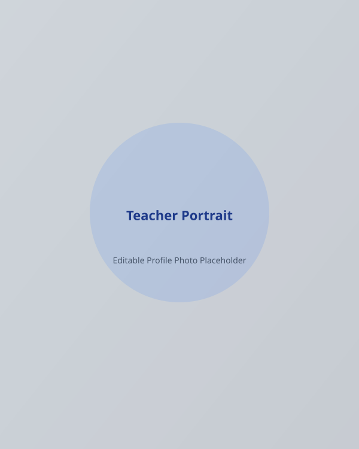

About Sarah Jenkins, M.Ed.
Dedicated high school educator with over 10 years of experience shaping STEM curricula, fostering student critical thinking, and leading physics and mathematics instruction.

Sarah Jenkins, M.Ed.
Senior High School Mathematics & Physics Educator
Institution: Oakridge High School
Location: Seattle, WA
Experience: 10+ Years
Cultivating Mathematical Confidence & Scientific Wonder
My journey as an educator is driven by the conviction that every student possesses the innate capacity to master rigorous mathematics and physics when guided through structured inquiry and patient mentorship. Over the past decade at Oakridge High School, I have designed and delivered AP Physics 1, AP Calculus AB, and Honors Algebra curricula designed to make complex concepts intuitive and accessible.
I earned my Master of Education in Science & Secondary Education from the University of Washington, where my graduate thesis investigated the effectiveness of inquiry-based lab models on student retention in introductory kinematics. Before entering the classroom, I completed a Bachelor of Science in Physics and Mathematics, graduating Magna Cum Laude.
Beyond subject mastery, my classroom serves as an environment where mistakes are recognized as necessary milestones in the learning process. By integrating real-world engineering challenges, interactive simulations, and structured peer collaboration, I prepare students not only for standardized AP assessments, but for lifelong academic resilience.
Core Professional Values
Inquiry-First Methodology
Prioritizing hands-on exploration and conceptual reasoning before introducing formal formulas.
Inclusive Differentiation
Tailoring instruction to accommodate varied learning styles, neurodiversity, and prerequisite math skills.
Growth Mindset Culture
Celebrating mistake analysis and structured revisions to eliminate test anxiety and build persistence.
STEM Interdisciplinarity
Connecting pure mathematics to practical engineering applications, robotics, and physical modeling.
Teaching Experience
Senior Physics & Math Educator
2018 – PresentOakridge High School • Seattle, WA
Teaches AP Physics 1, AP Calculus AB, and STEM Capstone. Leads curriculum redesign for the STEM department, increasing AP Physics exam qualifying pass rates to 94%.
High School Mathematics Teacher
2014 – 2018Westlake High School • Bellevue, WA
Instructed Honors Algebra II and Introductory Physics. Coached the school's Science Olympiad and Mathletes teams to top-3 state placements.
Student Teacher & Teaching Assistant
2013 – 2014University of Washington High School Lab
Assisted in introductory lab course facilitation and developed interactive physics demonstration modules.
Academic Qualifications
Master of Education (M.Ed.)
2014University of Washington • Science & Secondary Education
Specialized in STEM Pedagogy and Conceptual Assessment Design. Recipient of Dean's Award for Excellence in Graduate Teacher Preparation.
Bachelor of Science (B.S.) in Physics & Math
2012Washington State University • Magna Cum Laude
Dual major in Theoretical Physics and Pure Mathematics. GPA: 3.92/4.0. Completed Honors Thesis on Harmonic Oscillators.
National Board Certification (EA/Science)
2019National Board for Professional Teaching Standards
Highest credential in K-12 education, validating demonstrated expertise in physics teaching and student engagement.
Classroom Management & Student Support
A structured, welcoming, and psychologically safe environment designed to inspire academic confidence.
Clear Standards & Routines
Every class period follows predictable, transparent structures: Warm-up inquiry prompt, active lab or conceptual problem set, small group synthesis, and reflection ticket.
Restorative Discipline
Disagreements or behavior interruptions are addressed with private, constructive dialogue focused on mutual respect, personal responsibility, and resetting learning goals.
Individual Tutoring Support
Daily office hours and peer tutoring circles ensure that students who need additional assistance receive immediate, non-judgmental guidance.
Would You Like to Discuss Curriculum Alignment or Teaching Roles?
I am always open to connecting with administrators, department heads, and parents regarding STEM education initiatives.